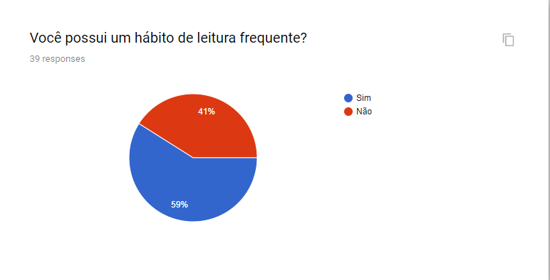
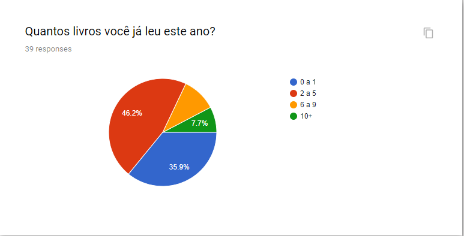
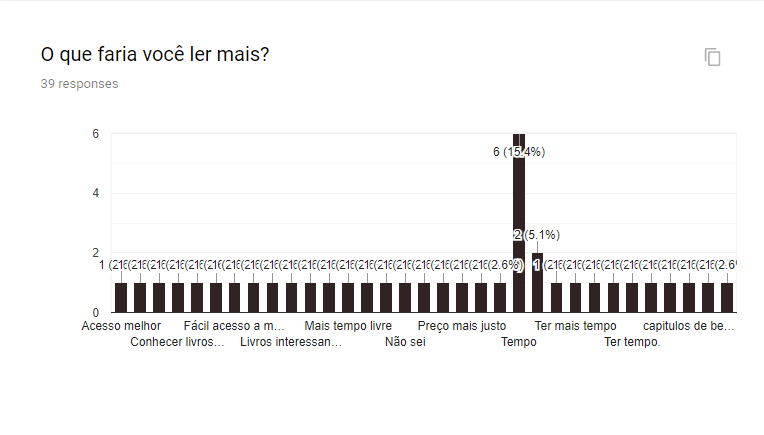
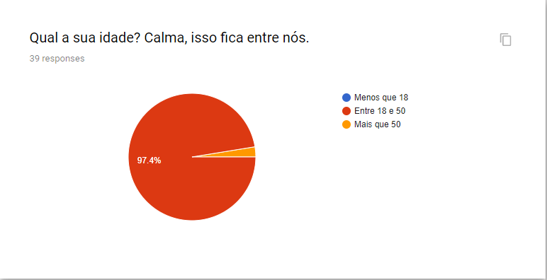
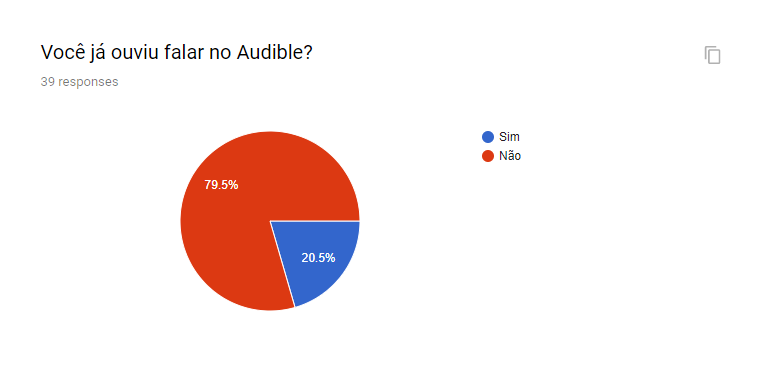
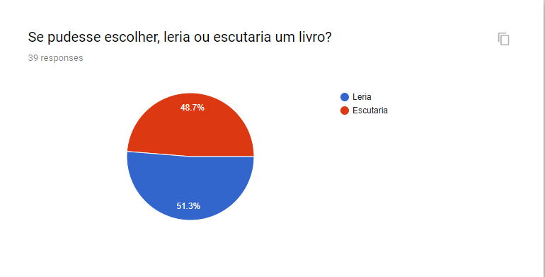
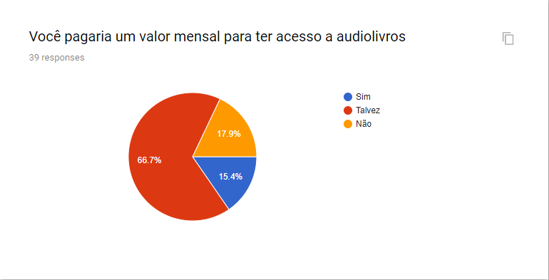
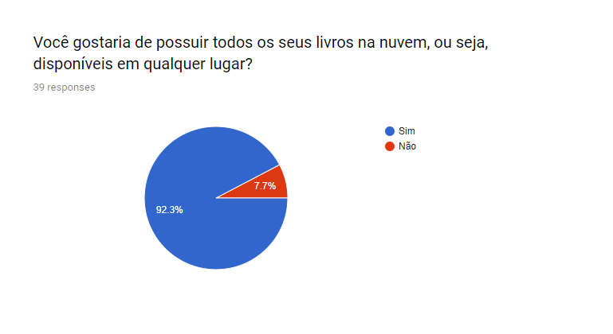
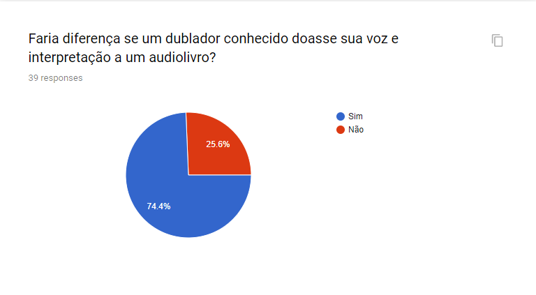
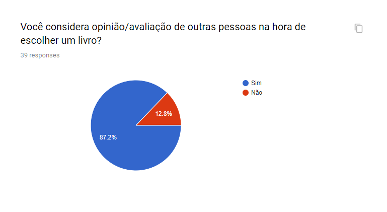

Questionário
Versionamento
| Versão | Data | Modificação | Autor |
|---|---|---|---|
| 1.0 | 12/09/2019 | Questionário | João Gabriel Antunes |
Introdução
O questionário é uma ótima maneira de elicitar requisitos, pois com ele é fácil saber qual as principais características e necessidades do público alvo, além, claro, de delinear este público.
Questões
Questão 1:

Questão 2:

Questão 3:

Questão 4:

Questão 5:

Questão 6:

Questão 7:

Questão 8:

Questão 9:

Questão 10:

Requisitos Elicitados
Requisitos Funcionais
Requisitos Funcionais
| Código | Descrição | Prioridade |
|---|---|---|
| RF01 | Salvar biblioteca pessoal na nuvem. | Must |
| RF02 | O aplicativo deve ofertar audiolivros. | Must |
| RF03 | Avaliação de livros disponível amplamente. | Should |
| RF04 | Busca de livros por narrador. | Could |
| RF05 | Serviço de assinatura para acesso ilimitado de livros. | Would |
Requisitos Não Funcionais
| Código | Descrição | Prioridade |
|---|---|---|
| RNF01 | Maior acessibilidade em toda a aplicação. | Should |
| RNF02 | Grande variedade de livros. | Could |
| RNF03 | Áreas de descoberta de novos livros baseada nos gostos do usuário. | Would |
| RNF04 | Sistema ter maneiras de incentivar a leitura ao usuário. | Would |